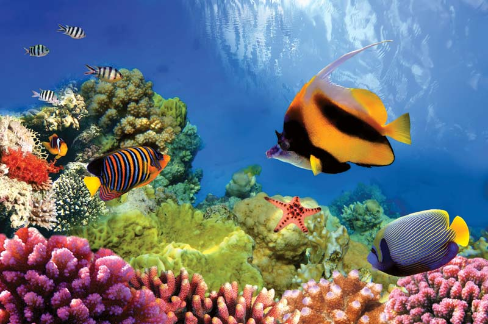
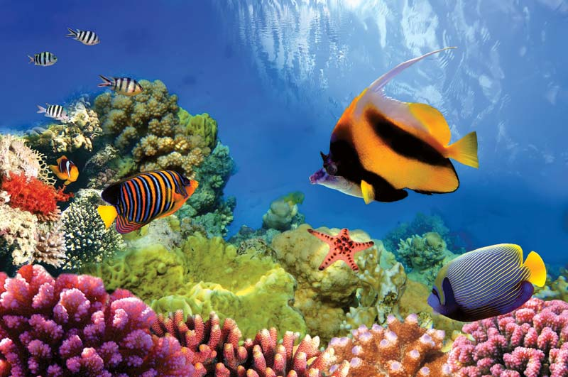
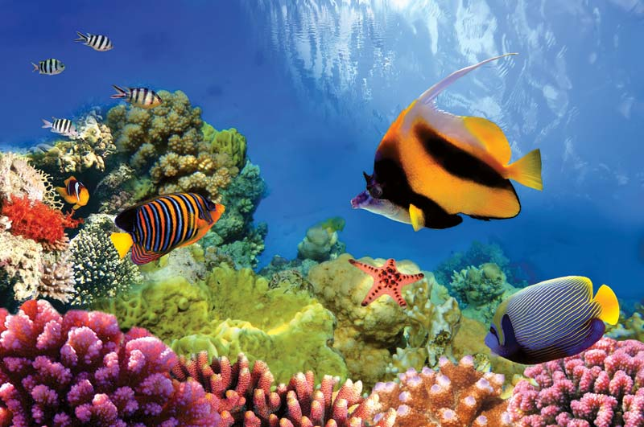
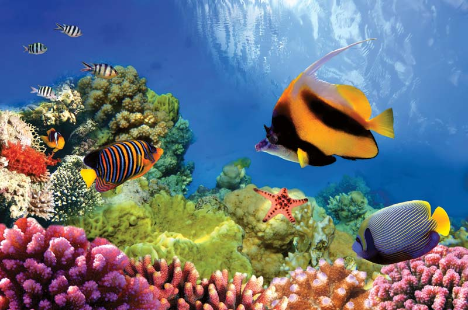

 

I've done this before but still I wanna do it again at beautiful places with friends, families, and loved ones. One fine day, Insya Allah.
Many psychologists have claimed that in order to conquer a fear you must be exposed to that fear — and probably more than once. Start facing your fear today by doing one thing that you are afraid of. Try holding a spider, jumping out of an airplane, climbing to the top of a mountain or even going to the dentist. Do whatever it takes for you to get out of your comfort zone.
I'm a Malaysian but I haven't done exploring my country yet. Not even my own state. So, in few years to come, I'm hoping to go explore and be a tourist in my own beloved Malaysia.
I want to write personal journal in years to come whenever I'm on vacation or when I'm doing fun memorable activities.
This is something that I've been dying to learn but haven't got the chance too. I'm hoping I'll tick it off my bucket list in years to come.